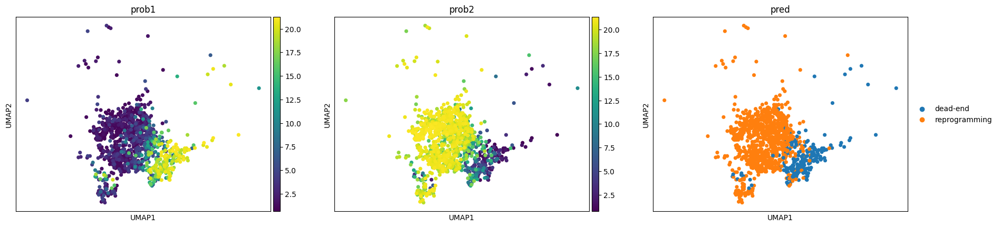

Multimodal CellTag Lineage Inference
This example applies Ageas to the CellTag-multi lineage-tracing dataset to infer cell fate bias from a static single-cell snapshot. It selects highly variable genes, splits the cells into a training set and a held-out early population, wraps them in a Multimodal_Corpus, and runs n_kfold_selection over a Hangar model panel. The selected Deck then predicts fate probabilities for the early cells, which are projected onto a UMAP.
[1]:
import shutil
import logging
import warnings
import pandas as pd
from sklearn.metrics import accuracy_score
from ageas import Hangar, n_kfold_selection
from ageas.tool import Multimodal_Corpus
import numpy as np
import matplotlib.pyplot as plt
from sklearn.metrics import roc_curve, auc
from sklearn.preprocessing import LabelBinarizer
import scanpy as sc
/data/jiangjunyao/miniconda3/envs/ageas/lib/python3.12/site-packages/tqdm/auto.py:21: TqdmWarning: IProgress not found. Please update jupyter and ipywidgets. See https://ipywidgets.readthedocs.io/en/stable/user_install.html
from .autonotebook import tqdm as notebook_tqdm
[2]:
adata = sc.read_h5ad('/data/jiangjunyao/easyGRN/processed_data/celltag_multi_iep.prcessed.h5ad')
sc.pp.highly_variable_genes(adata, n_top_genes=2000, subset=True,flavor='seurat_v3')
sc.pp.normalize_total(adata)
[3]:
adata
[3]:
AnnData object with n_obs × n_vars = 8137 × 2000
obs: 'orig.ident', 'nCount_RNA', 'nFeature_RNA', 'percent.mt', 'S.Score', 'G2M.Score', 'Phase', 'old.ident', 'CC.Difference', 'RNA_snn_res.0.8', 'seurat_clusters', 'sample', 'replicate', 'predicted.id_cca_co', 'prediction.score.Fib_1_cca_co', 'prediction.score.Fib_0_cca_co', 'prediction.score.Fib_2_cca_co', 'prediction.score.Early_0_cca_co', 'prediction.score.Tran_0_cca_co', 'prediction.score.Tran_1_cca_co', 'prediction.score.Early_1_cca_co', 'prediction.score.Early_2_cca_co', 'prediction.score.iEP_1_cca_co', 'prediction.score.Tran_2_cca_co', 'prediction.score.iEP_2_cca_co', 'prediction.score.Dead.end_1_cca_co', 'prediction.score.Dead.end_0_cca_co', 'prediction.score.iEP_0_cca_co', 'prediction.score.Dead.end_2_cca_co', 'prediction.score.max_cca_co', 'RNA_snn_res.0.2', 'cellranger_ident', 'md_fate_rev1', 'md_fate_coarse_rev1', 'cell', 'barcodes', 'celltype', 'lineage', 'RNA_snn_res.0.05', 'UMAP_1', 'UMAP_2', 'state_info', '_scvi_batch', '_scvi_labels', 'time_info', 'fate_ratio', 'fate_bias', 'reprogramming_fate_ratio', 'reprogramming_fate_bias', 'dead-end_fate_ratio', 'dead-end_fate_bias', 'transition_fate_ratio', 'transition_fate_bias', 'early_fate_ratio', 'early_fate_bias', 'used_cell', 'repgramming_fate_ratio_all', 'dead-end_fate_ratio_all', 'repgramming_fate_bias_all', 'dead-end_fate_bias_all', 'dpt_pseudotime'
var: 'name', 'highly_variable', 'highly_variable_rank', 'means', 'variances', 'variances_norm'
uns: 'Phase_colors', '_scvi_manager_uuid', '_scvi_uuid', 'barcode_heatmap', 'celltype_colors', 'clonal_fate_bias', 'clonal_time_points', 'clone_id', 'data_des', 'diffmap_evals', 'draw_graph', 'hvg', 'iroot', 'lineage_colors', 'md_fate_rev1_colors', 'neighbors', 'replicate_colors', 'sample_colors', 'time_info_colors', 'time_ordering', 'umap'
obsm: 'X_clone', 'X_diffmap', 'X_draw_graph_fr', 'X_emb', 'X_pca', 'X_scVI', 'X_umap'
[4]:
adata_test = adata[adata.obs['celltype']=='early']
adata_train = adata[adata.obs['celltype']!='early']
[10]:
corpus = Multimodal_Corpus(
adata=adata_train,
label_key = 'celltype',
backed=False
)
corpus_test = Multimodal_Corpus(
adata=adata_test,
label_key = 'state_info',
backed=False
)
# Init main Panel
hangar = Hangar('/data/jiangjunyao/software/Ageas/data/configs/default_config_v1')
[ ]:
deck = n_kfold_selection(
accelerator = 'cuda',
query_dataset = corpus,
kfold_selection_list = [2],
hangar=hangar,
monitor_metric = 'test.accuracy',
retention_point = 0.5,
verbose = True,
)
all_preds, all_labels = deck.predict(query_dataset = corpus_test)
[ ]:
result = []
for label in np.argmax(all_preds, axis=1):
value = corpus.label_dict.get(label)
result.append(value)
corpus_test.adata.obs['pred'] = result
corpus_test.adata.obs['prob1'] = all_preds[:, 0]
corpus_test.adata.obs['prob2'] = all_preds[:, 1]
[13]:
sc.pl.umap(corpus_test.adata,color=['prob1','prob2','pred'])
